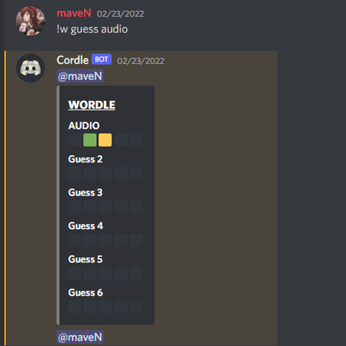
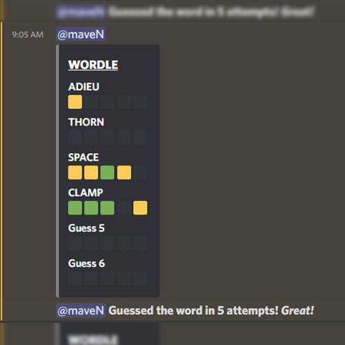
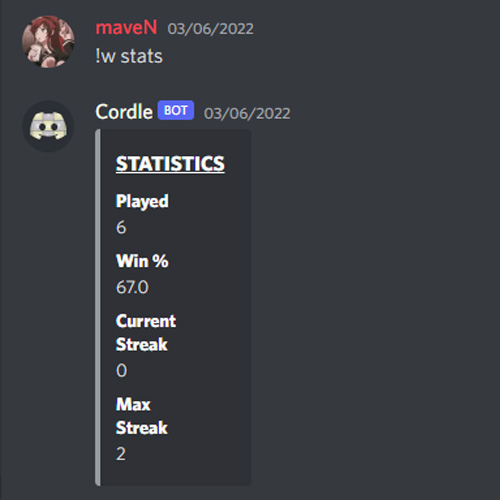

Discordle is an entertainment bot that focuses on recreating the popular game Wordle within Discord.
This bot allows for user to play daily Discordle games and compete with their friends. The bot also removes guesses from chat, so that other users may not see
what the word is prior to their own discovery.
This bot is not available for public access.
// Features
This bot's features are dedicated towards recreating the New York Times popular game, Wordle.
6 Word Guesses
Display Letter Positions
View User Statistics
// Development
This project began back in February when I first played Wordle, which was just gaining popularity at the time. After playing the game, I thought to myself, "this can't be that hard to code."
Alas, it was not as easy as I expected.
I set to work on this project shortly after, and began thinking of ways to recreate the game. I eventually settled on converting a 5 letter string to a list, and looping through it to test for letter positions. From there,
I would simply assign an empty list an emoji varying in color, depending on if the user's guessed letter was in the right position. That list would then simply be printed in an embed, and displayed to the user.
While this project does work fairly well, it does have its drawbacks. For starters, the user's guesses /* Up to all 6 of them */ may be viewed in the chat in which they are guessing. So, while the
original guess is removed, all previous ones and their letter locations may be viewed. If I were to revisit this project, I would most likely change the bot to work in private messaging rather than in public chats. This is a decently simple solution to do,
but since my project only ended up getting used by a few of my friends, I was content with how it worked for now.
// Usage
This bot utilizes the prefix !w {message}.



Made with 🤍 by Logan CalderInspired by iuri.is // Visit Here